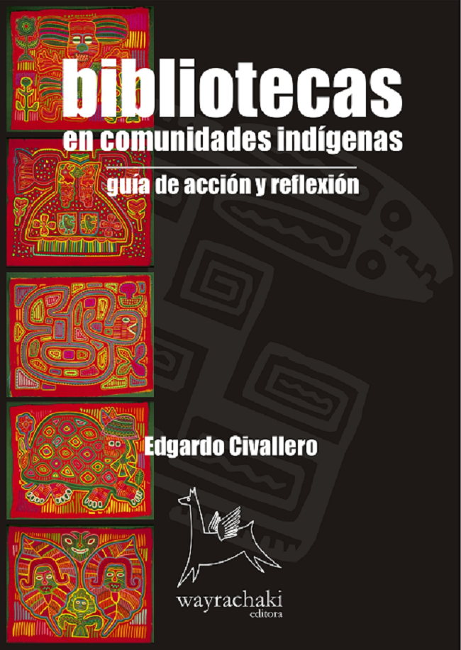

Digital books | Indigenous libraries
Home > Publications > Digital books | Indigenous libraries
My work with Latin American indigenous peoples and their relationship, both potential and actual, with libraries and other spaces of knowledge and memory began early in my career, primarily through fieldwork. Initially, I engaged in activities in the Chaco region of northeastern Argentina with the Qom people and their Moqoit, Wichi, and Pi'laxá neighbors. Subsequently, I collaborated on numerous projects, delivered conferences and courses, published a thesis, numerous articles, several blogs, and four digital books on the subject. Over time, I came to the realization that my perspective, along with those who worked similarly, was inherently colonialist. It took several years to rectify my approach, by which time the indigenous communities themselves had reclaimed their knowledge and memories.
Currently, my research and reflections center on the concept of "libraries, archives, and museums" within the context of Latin American native peoples. My work delves into tools of classification and documentary languages, the editorial production of indigenous knowledge and languages in the region, the implicit colonialism within the notion of "library," relevant public policies, persistent stereotypes, and more.
In this section, I offer free access to the four aforementioned books. Although they were published some time ago under my label Wayrachaki Editora, they still contain valuable insights within their pages.
Please note that all content is protected by copyright and distributed under a Creative Commons license (refer to the copyright and disclaimer section for details).

Bibliotecas indígenas en América Latina.
Revisión bibliográfica y estado actual de la cuestión
Córdoba (Argentina): Wayrachaki Editora, 2008.
Through experiences, protocols, strategies, and bibliography (especially web access), this book offers insight into the reality of libraries for indigenous populations in Latin America.
[Download].

Bibliotecas indígenas en Oceanía.
Revisión bibliográfica y estado actual de la cuestión
Córdoba (Argentina): Wayrachaki Editora, 2008.
Through experiences, protocols, strategies, and bibliography (especially web access), this book provides a glimpse into the reality of libraries for the native populations of the islands of Oceania, which have some of the most advanced standards in this category of information units.
[Download].

Bibliotecas en comunidades indígenas.
Guía de acción y reflexión
Córdoba (Argentina): Wayrachaki Editora, 2007.
The title of this work reflects its content in a unique way: a true guide for action and reflection, both related to library services for indigenous communities. The book offers guidance on definitions and concepts, working methods, services and activities, and experiences already implemented in the Latin American context.
[Download].

Bibliotecas indígenas.
Revisión bibliográfica y estado actual de la cuestión a nivel internacional
Córdoba (Argentina): Wayrachaki Editora, 2007.
Library services for indigenous communities are activities that have been developed with special emphasis in the last two decades, particularly in geographical areas where the presence of native populations is stronger, such as America, Oceania, and Scandinavia. Structured in four parts (Oceania, Latin America, North America, and Scandinavia), the work offers a relevant synthesis of the documents published on the subject and of the proposals implemented. The information has been structured and presented in such a way that it constitutes, in itself and as its title indicates, a current state of the art at the international level. Additionally, the illustrations (by photographers Daniel Michuit and Phil Borges) provide a unique graphic framework. This is the first text on this subject written in Spanish by a single author, and it will likely become a reference guide and a necessary resource for future works and publications.
[Download].